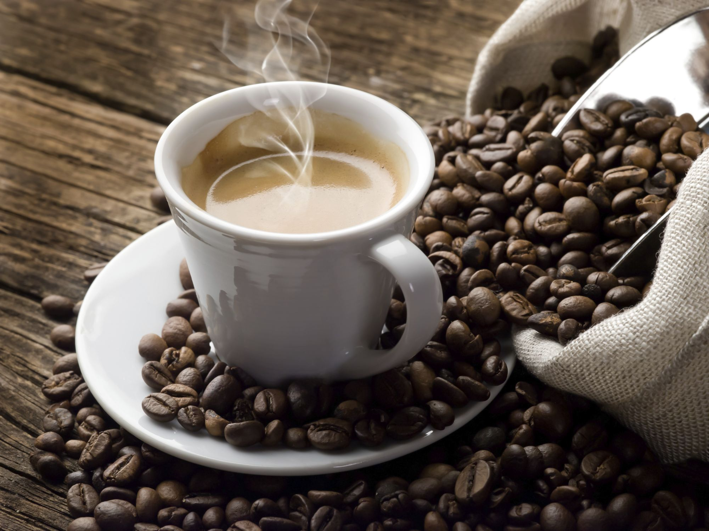
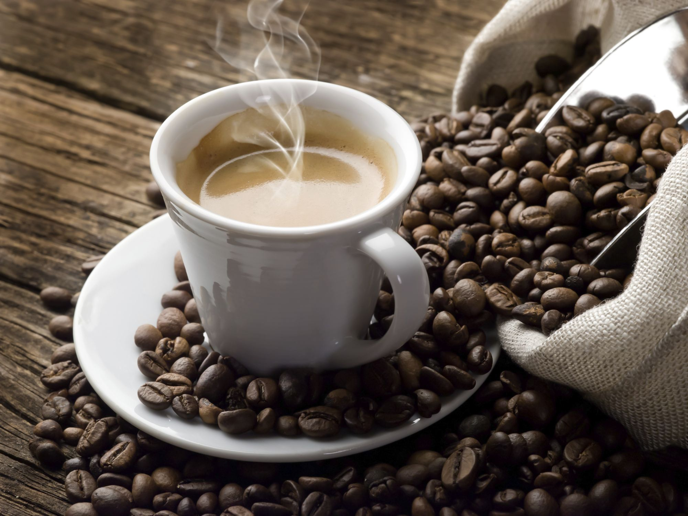

About
Coffee is a brewed drink prepared from roasted coffee beans, which are the seeds of berries from the Coffea plant. The genus Coffea is native to tropical Africa (specifically having its origin in Ethiopia and Sudan) and Madagascar, the Comoros, Mauritius, and Réunion in the Indian Ocean.[2] The plant was exported from Africa to countries around the world. Coffee plants are now cultivated in over

Brazil is the leading grower of coffee, producing one-third of the world total in 2016.
Coffee is a major export commodity: it is the top agricultural export for numerous countries and is among the world's largest legal agricultural exports.
[3][7][not in citation given] It is one of the most valuable commodities exported by developing countries.
Green (unroasted) coffee is one of the most traded agricultural commodities in the world.
[8] Some controversy is associated with coffee cultivation and the way developed countries trade with developing nations and the impact of its cultivation on the environment,
in regards to the clearing of land for coffee-growing and water use.
Consequently, the markets for fair trade coffee and organic coffee are expanding.
 
